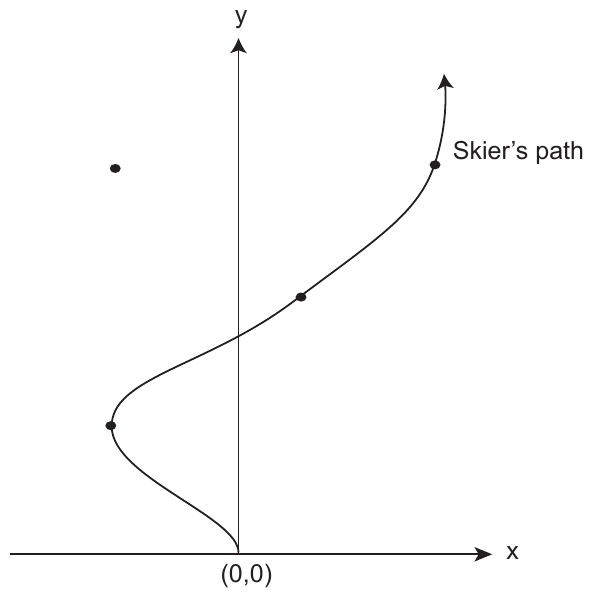

ACM-ICPC World Finals 2014 · Problem J
As you know, the ACM ICPC is not the only major sporting event taking place in Russia this year. Several months ago, the 2014 Winter Olympics were held in Sochi, which is about 3 000 km from Ekaterinburg.
In an increasing number of sports, it is not only the ability of the athletes that determines who wins a competition but also their equipment. For example in downhill skiing, having the latest ski technology enables athletes to increase their speeds and improve their turning ability.
You have been hired to determine the effect of the latest ski technology on the ability of skiers to navigate a downhill course. The course contains several target locations, and the skier wants to pass over as many of them as possible. Naturally, the better the ski technology, the easier it will be to do this.
For simplicity, use a two-dimensional coordinate system where the skier starts at position (0,0) and where “downhill” corresponds to the direction of the positive y-axis.
Assume the y-component of the athlete’s velocity is a constant vy. The athlete can change speed laterally (in the x-direction), but the skiing equipment limits this to a maximal lateral acceleration amax. The skier starts with a lateral velocity of 0.

In Figure J.1 (which corresponds to the first sample input), the optimal path passes over three out of four possible targets. If amax were smaller, then the skier might be able to pass over only two or fewer of the targets.
The input contains a single test case. The first line contains three integers n, vy, and amax (0 ≤ n ≤ 250, 0 ≤ vy ≤ 105 and 0 ≤ amax ≤ 107), where n is the number of targets, vy is the y-component of the skier’s velocity, and amax is the maximum lateral acceleration. Here vy is given in meters per hour and amax in meters per hour squared.
Following this are n lines, each containing two integers xi and yi (−105 ≤ xi, yi ≤ 105). These give the coordinates of each target to be visited on the course. All coordinates are given in meters. Targets are numbered 1, 2, ..., n in the order they are given.
Display the maximal-length sequence of targets that the athlete could pass over on the course in a single run. Display the targets in the order they are visited. If there are multiple maximal-length sequences, display only the lexicographically first one. (So the sequence 2 15 would come before the sequence 10 15.) If the athlete cannot pass over any targets, print Cannot visit any targets instead.
To ensure floating-point stability, you may assume the answer will not change if amax is perturbed by up to 0.1.
4 100 400 -100 100 50 200 -100 300 150 300
1 2 4
1 100 100 1000 10
Cannot visit any targets